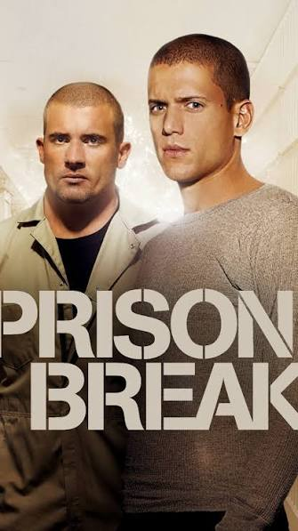

Prison Break

Prison Break é uma série de drama e suspense que acompanha o engenheiro Michael Scofield e seu irmão Lincoln Burrows enquanto planejam uma fuga de uma prisão federal.
Em Prison Break, após a prisão de Lincoln Burrows (Dominic Purcell), condenado por um crime que não cometeu e mandado para o corredor da morte, o engenheiro Michael Scofield (Wentworth Miller) bola um plano elaborado para tirar o irmão da cadeia. Enviado para a penitenciária estadual de segurança máxima Fox River ao lado de Lincoln, Michael começa a executar a sua estratégia, mas logo percebe que está envolvido no meio de uma perigosa conspiração policial e política. Para garantir a liberdade da sua família e provar a inocência do irmão, ele precisará enganar a Dra. Sara Tancredi (Sarah Wayne Callies) e se associar a perigosos criminosos condenados, como Fernando Sucre (Amaury Nolasco), Theodore 'T-Bag' Bagwell (Robert Knepper) e John Abruzzi (Peter Stormare). Se a fuga for bem sucedida, a dupla ainda precisará fugir e se esconder das autoridades e, sobretudo, daqueles que ameaçam suas vidas.
Informações principais
- Gênero: Fantasia, drama e aventura
- Ano de lançamento: 2011
- Temporadas: 8
- Episódios: 73
- Criadores: David Benioff e D. B. Weiss
Curiosidades
- Quase cancelada antes do início: A Fox recusou a ideia inicial da série em 2003 por medo de que o tema de prisões não agradasse, mas mudou de ideia após o sucesso de Lost e 24 Horas.
- Prisão real: As cenas da Penitenciária Fox River foram gravadas na Joliet Prison, um presídio desativado em Illinois.
- Escolha de última hora: Wentworth Miller foi escalado como Michael Scofield apenas uma semana antes do início das gravações.